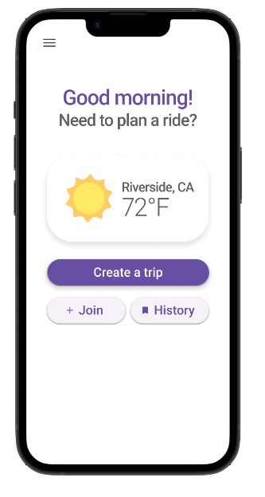
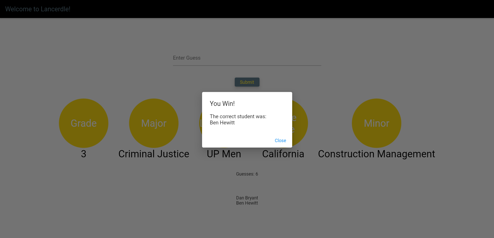

About Me
I am going into my last year as a Computer Science student at California Baptist University. I am looking to further my education by gaining experience as an intern. My current involvements outside of school are working in the Outdoor Recreation program at CBU, programming in the CBU Applied Machine Learning Lab, as well as participating in multiple intramural sports activities. I also enjoy volunteering at church every week in the middle school youth program.
Projects
-
Fleet Carpool
Fleet is an app designed to help you organize carpool groups effectively. Users can create trips, invite their friends to join using a customized trip code, and choose to be a passenger or a driver. Fleet also utilizes Google API's and the gas price in the area to calculate the estimated cost for users to ride as a passenger for a trip.
View project in GitHub  -
Clink Connect
Using Clink is the best way to break down social barriers, meet new people, and experience being in the moment. Clink utilizes Bluetooth technology to allow you to message and connect with the people around with you.
View project Website
-
Lancerdle
This twist on the classic Wordle game is a great way to get involved as a student at California Baptist University. Try and guess the student of the day! By guessing other students, you will narrow down the possible options by figuring out clues about the student of the day, including: major, living area, and grade.
View Project in GitHub 